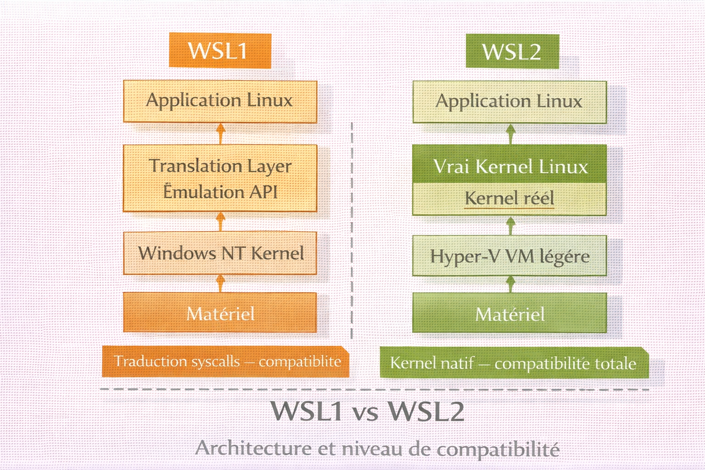
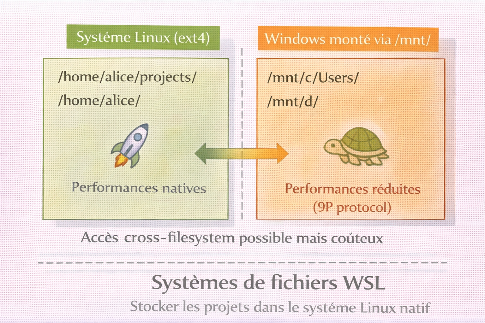
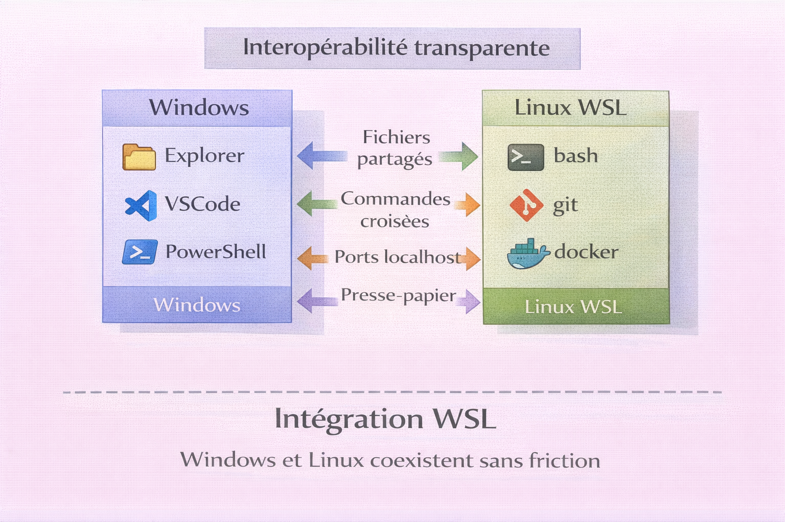

WSL — Windows Subsystem for Linux¶
Analogie
Un immeuble (Windows) dans lequel on souhaite aménager un jardin japonais authentique. Plutôt que de déménager au Japon (dual-boot) ou de construire une serre séparée dans l'appartement (machine virtuelle lourde), on crée un espace intégré directement dans le salon qui reproduit fidèlement l'environnement voulu tout en partageant l'électricité et le chauffage de l'appartement. WSL fonctionne exactement ainsi : un Linux complet et performant, directement intégré dans Windows, partageant les ressources système sans la lourdeur d'une virtualisation traditionnelle.
WSL (Windows Subsystem for Linux) est une couche de compatibilité développée par Microsoft qui permet d'exécuter un environnement Linux authentique directement sous Windows 10/11, sans les contraintes d'une machine virtuelle traditionnelle ou d'un dual-boot. WSL2, la version actuelle, utilise un véritable noyau Linux optimisé par Microsoft pour offrir une compatibilité quasi-totale avec les applications et outils Linux.
WSL révolutionne le développement sous Windows en permettant d'utiliser nativement les outils, scripts et workflows Linux tout en conservant l'écosystème Windows. Cette intégration transparente élimine les frictions entre ces deux mondes historiquement séparés.
Pourquoi c'est important
WSL permet le développement web et cloud moderne, l'utilisation d'outils DevOps, l'exécution de conteneurs Docker, le scripting Bash, l'apprentissage Linux sans quitter Windows et l'accès aux outils de cybersécurité Linux. C'est devenu l'environnement de référence pour les développeurs sous Windows.
Intégration, pas séparation
WSL n'est pas une machine virtuelle isolée. C'est une intégration profonde où Windows et Linux partagent ressources, fichiers et réseau. Il est possible d'éditer des fichiers Linux avec VSCode Windows, de lancer des commandes Windows depuis Linux, et inversement.
WSL1 vs WSL2 — Évolution architecturale¶
Microsoft a développé deux versions de WSL avec des architectures radicalement différentes.
L'image ci-dessous compare les deux architectures côte à côte. Comprendre la différence entre traduction d'appels système et kernel réel explique pourquoi WSL2 est le standard — et dans quels rares cas WSL1 reste pertinent.

WSL1 traduit les appels système Linux en appels Windows — démarrage instantané, faible consommation mémoire, mais compatibilité partielle. WSL2 exécute un vrai kernel Linux dans une VM Hyper-V allégée — compatibilité totale, performances I/O natives dans le système Linux, mais accès cross-filesystem plus lent.
Architecture WSL1¶
flowchart TB
A[Application Linux]
B["WSL1 Translation Layer\nSyscalls Linux → Windows"]
C[Windows NT Kernel]
D[Matériel]
A -->|Appels système Linux| B
B -->|Traduit en appels Windows| C
C --> DWSL1 traduit les appels système Linux en appels Windows sans véritable kernel Linux. Démarrage instantané, faible consommation RAM, mais compatibilité incomplète : pas de Docker natif, problèmes d'I/O, syscalls manquants.
Architecture WSL2¶
flowchart TB
A[Application Linux]
B[Véritable Kernel Linux]
C[Hyper-V Lightweight VM]
D[Windows NT Kernel]
E[Matériel]
A -->|Appels système Linux natifs| B
B --> C
C --> D
D --> EWSL2 exécute un vrai kernel Linux maintenu par Microsoft dans une VM Hyper-V optimisée. Compatibilité totale avec tous les appels système Linux, Docker natif, systemd, modules kernel.
Comparaison détaillée¶
| Critère | WSL1 | WSL2 |
|---|---|---|
| Compatibilité syscalls | Partielle (~80%) | Totale (~100%) |
| Performances I/O Linux | Lentes | Natives |
| Performances I/O Windows (/mnt/c) | Rapides | Réduites |
| Démarrage | Instantané | ~2 secondes |
| Consommation RAM | Faible | Moyenne |
| Docker natif | Non | Oui |
| Systemd | Non | Oui (depuis 2022) |
| Modules kernel | Non | Oui |
| Réseau | Bridge direct | NAT |
Recommandation
Utiliser WSL2 dans tous les cas sauf accès intensif aux fichiers Windows depuis Linux ou RAM très limitée (moins de 4 Go). WSL2 est le standard moderne et sera le seul maintenu à long terme.
Installation¶
Prérequis système¶
Configuration minimale : Windows 10 version 2004+ (Build 19041+) ou Windows 11, architecture 64-bit, virtualisation activée dans le BIOS/UEFI, 4 Go de RAM minimum (8 Go recommandé), 20 Go d'espace disque disponible.
# Version Windows
winver
# Vérifier si la virtualisation est activée
Get-ComputerInfo | Select-Object HyperVisorPresent, HyperVRequirementVirtualizationFirmwareEnabled
Installation automatique (recommandée)¶
# Installer WSL avec Ubuntu par défaut
wsl --install
# Installer une distribution spécifique
wsl --install -d Ubuntu-24.04
wsl --install -d Debian
Cette commande active les fonctionnalités Windows nécessaires, télécharge le kernel Linux WSL2, définit WSL2 comme version par défaut et installe la distribution choisie. Un redémarrage est requis après l'installation.
Installation manuelle¶
# 1. Activer WSL
dism.exe /online /enable-feature /featurename:Microsoft-Windows-Subsystem-Linux /all /norestart
# 2. Activer la plateforme de machine virtuelle
dism.exe /online /enable-feature /featurename:VirtualMachinePlatform /all /norestart
# 3. Redémarrer Windows, puis télécharger le package kernel WSL2
# https://aka.ms/wsl2kernel
# 4. Définir WSL2 comme version par défaut
wsl --set-default-version 2
# 5. Installer une distribution depuis le Microsoft Store
Distributions disponibles¶
| Distribution | Version | Usage recommandé |
|---|---|---|
| Ubuntu | 24.04 LTS | Développement général, débutants |
| Ubuntu | 22.04 LTS | Stabilité maximale |
| Debian | 12 (Bookworm) | Serveurs, stabilité |
| Kali Linux | Rolling | Cybersécurité, pentesting |
| Alpine | 3.19 | Conteneurs légers, minimal |
| Fedora | Latest | Technologies récentes, Red Hat |
| Arch Linux | Rolling | Utilisateurs avancés |
| Oracle Linux | 8/9 | Entreprise, compatibilité RHEL |
Première configuration¶
Au premier lancement, WSL demande la création d'un utilisateur Unix :
# WSL demande un nom d'utilisateur et un mot de passe Unix
Enter new UNIX username: alice
New password:
Retype new password:
# Cet utilisateur est distinct du compte Windows et dispose des droits sudo
Gestion des distributions¶
# Lister les distributions installées avec leur version et état
wsl --list --verbose
# Résultat exemple :
# NAME STATE VERSION
# * Ubuntu-24.04 Running 2
# Debian Stopped 2
# Kali-Linux Stopped 2
# Lancer une distribution spécifique
wsl -d Ubuntu-24.04
# Définir la distribution par défaut
wsl --set-default Ubuntu-24.04
# Arrêter une distribution
wsl --terminate Ubuntu-24.04
# Arrêter toutes les distributions
wsl --shutdown
# Lancer en tant qu'utilisateur spécifique
wsl -u root
wsl -d Debian -u alice
# Exécuter une commande sans shell interactif
wsl ls -la
wsl -d Debian cat /etc/os-release
Conversion WSL1 vers WSL2¶
# Convertir une distribution vers WSL2
wsl --set-version Ubuntu-24.04 2
# Définir la version par défaut pour les nouvelles installations
wsl --set-default-version 2
Import et export¶
# Exporter une distribution — sauvegarde complète du système Linux
wsl --export Ubuntu-24.04 D:\Backups\ubuntu-backup.tar
# Importer une distribution restaurée dans un répertoire dédié
wsl --import Ubuntu-Restored D:\WSL\Ubuntu D:\Backups\ubuntu-backup.tar
# Désinstaller une distribution — supprime toutes les données sans confirmation
wsl --unregister Ubuntu-24.04
Cloner une distribution¶
# Exporter la distribution source
wsl --export Ubuntu-24.04 D:\temp\ubuntu-source.tar
# Importer avec un nouveau nom dans un répertoire dédié
wsl --import Ubuntu-Dev D:\WSL\Ubuntu-Dev D:\temp\ubuntu-source.tar
# Nettoyer le fichier temporaire
Remove-Item D:\temp\ubuntu-source.tar
Configuration¶
Fichier .wslconfig — configuration globale¶
Configure toutes les distributions WSL2 de la machine.
Emplacement : C:\Users\<VotreNom>\.wslconfig
[wsl2]
# Mémoire maximum allouée à WSL2
memory=8GB
# Nombre de processeurs virtuels
processors=4
# Taille du swap
swap=4GB
# Localisation du fichier swap
swapFile=D:\\WSL\\swap.vhdx
# Forwarding localhost — ports Linux accessibles via localhost Windows
localhostForwarding=true
# Activer la virtualisation imbriquée (VM dans WSL)
nestedVirtualization=true
# Activer les applications GUI Linux (WSLg)
guiApplications=true
# Récupération automatique de la mémoire inutilisée
autoMemoryReclaim=gradual
# Redémarrer toutes les distributions pour appliquer
wsl --shutdown
Fichier wsl.conf — configuration par distribution¶
Configure une distribution spécifique.
Emplacement : /etc/wsl.conf dans chaque distribution Linux.
[automount]
# Monter automatiquement les lecteurs Windows
enabled=true
# Point de montage
root=/mnt/
# Options de montage — metadata active chmod/chown sur /mnt/c
options="metadata,umask=22,fmask=11"
[network]
# Générer /etc/hosts automatiquement
generateHosts=true
# Générer /etc/resolv.conf automatiquement
generateResolvConf=true
# Nom d'hôte de la distribution
hostname=wsl-dev
[interop]
# Autoriser le lancement d'exécutables Windows depuis Linux
enabled=true
# Ajouter le PATH Windows au PATH Linux
appendWindowsPath=true
[boot]
# Activer systemd (WSL2 2022+)
systemd=true
# Commande à exécuter au démarrage (exemple)
# command="service docker start"
[user]
# Utilisateur par défaut au lancement
default=alice
Activer systemd¶
Systemd permet d'utiliser systemctl, Docker natif et les services Linux modernes.
Système de fichiers¶
L'image ci-dessous illustre les deux zones du système de fichiers WSL et leurs performances respectives. C'est la règle la plus importante à retenir pour éviter des ralentissements sur un projet actif.

Le système de fichiers Linux (ext4) est accédé nativement — compilations, installations npm, opérations git y sont rapides. Les lecteurs Windows montés via /mnt/ passent par le protocole 9P — un projet Node.js dans /mnt/c/ peut être 5 à 10 fois plus lent qu'en /home/. Stocker les projets actifs dans le système Linux est non négociable.
Architecture¶
flowchart TB
subgraph Windows
A["C:\\Users\\Alice\\"]
B["D:\\Projects\\"]
end
subgraph "WSL Linux"
D["/home/alice/\nSystème natif Linux — ext4"]
E["/mnt/c/\nLecteur C: Windows"]
F["/mnt/d/\nLecteur D: Windows"]
end
A --> E
B --> FAccès aux fichiers Linux depuis Windows¶
# Dans la barre d'adresse de l'Explorateur Windows
\\wsl$\Ubuntu-24.04\home\alice
# Alternative disponible depuis Windows 11
\\wsl.localhost\Ubuntu-24.04\home\alice
explorer.exe .
# Ouvrir un fichier avec une application Windows
code fichier.py
Accès aux fichiers Windows depuis Linux¶
# Lecteur C:
cd /mnt/c/Users/Alice/Documents
# Lecteur D:
cd /mnt/d/Projects
# Lister tous les montages
ls -la /mnt/
Règles de stockage¶
| Scénario | Emplacement recommandé | Raison |
|---|---|---|
| Projet Node.js / Python / Go | ~/projects/ |
npm, pip, go ultra rapides |
| Site web PHP | ~/www/ |
Performances serveur maximales |
| Dotfiles et config | ~/ |
Natif Linux |
| Documents Word / Excel | /mnt/c/Users/Alice/Documents/ |
Édition Windows native |
| Code partagé Windows/Linux | /mnt/c/SharedCode/ + git |
Compromis acceptable |
# Correct — performances maximales
~/projects/monapp/
# Incorrect — performances dégradées (5 à 10 fois plus lent)
/mnt/c/Users/Alice/projects/monapp/
Ne jamais modifier les fichiers Linux directement depuis Windows
Modifier les fichiers dans \\wsl$\ avec des outils Windows en dehors de VSCode ou IntelliJ risque de corrompre les métadonnées Linux. Ces éditeurs gèrent WSL correctement — les autres non.
Activer les métadonnées (chmod sur /mnt/)¶
Après redémarrage, chmod et chown fonctionnent sur /mnt/c/.
Réseau et connectivité¶
Architecture réseau WSL2¶
flowchart TB
LAN["Réseau local\n192.168.1.0/24"]
WIN["Windows — 192.168.1.100\nAdaptateur vEthernet WSL — 172.X.X.1"]
WSL["Linux eth0\n172.X.X.Y — IP dynamique"]
LAN <--> WIN
WIN <-->|"NAT — Virtual Switch"| WSLWSL2 obtient une IP dynamique dans un sous-réseau privé (172.X.X.0/20). Le trafic Linux sort via NAT Windows. Le localhost forwarding rend les ports Linux accessibles via localhost sous Windows.
Accès réseau¶
# Les services Windows sont accessibles via localhost
curl http://localhost:8080
# Récupérer l'IP de l'hôte Windows depuis Linux
ip route show | grep -i default | awk '{ print $3 }'
# Un service Linux sur le port 3000 est accessible via localhost Windows
# http://localhost:3000 (localhost forwarding activé par défaut)
Exposer des ports WSL au réseau local¶
Les ports WSL ne sont pas exposés automatiquement au réseau local — seul localhost Windows y a accès.
# Transférer le port 3000 Windows vers WSL
netsh interface portproxy add v4tov4 `
listenport=3000 `
listenaddress=0.0.0.0 `
connectport=3000 `
connectaddress=$(wsl hostname -I)
# Lister les forwardings actifs
netsh interface portproxy show all
# Supprimer un forwarding
netsh interface portproxy delete v4tov4 listenport=3000 listenaddress=0.0.0.0
# Exécuter après chaque démarrage de WSL — l'IP WSL change à chaque redémarrage
$wsl_ip = (wsl hostname -I).Trim()
$ports = @(3000, 8080, 5432)
foreach ($port in $ports) {
netsh interface portproxy delete v4tov4 listenport=$port listenaddress=0.0.0.0
netsh interface portproxy add v4tov4 `
listenport=$port `
listenaddress=0.0.0.0 `
connectport=$port `
connectaddress=$wsl_ip
}
# Autoriser dans le pare-feu Windows
New-NetFirewallRule -DisplayName "WSL Ports" -Direction Inbound -LocalPort $ports -Protocol TCP -Action Allow
DNS et VPN¶
sudo nano /etc/resolv.conf
# Ajouter les serveurs DNS
nameserver 8.8.8.8
nameserver 1.1.1.1
# Protéger contre la réinitialisation automatique par WSL
sudo chattr +i /etc/resolv.conf
VPN et connectivité WSL
Un VPN actif sous Windows peut bloquer la connectivité réseau de WSL2. En cas de problème, configurer manuellement le DNS du VPN dans /etc/resolv.conf ou utiliser un client VPN installé directement dans WSL.
sudo apt install openconnect
sudo openconnect vpn.entreprise.com
Intégration Windows-Linux¶
L'image ci-dessous représente les quatre axes d'interopérabilité WSL. Cette intégration bidirectionnelle est la principale différence avec une machine virtuelle classique — les deux systèmes coexistent sans friction.

Contrairement à une VM isolée, WSL partage le système de fichiers (via /mnt/), les ports réseau (via localhost forwarding), le presse-papier et la capacité à lancer des exécutables dans les deux sens. Cette transparence rend le basculement Windows/Linux imperceptible au quotidien.
Lancer des applications Windows depuis Linux¶
# Ouvrir l'Explorateur Windows au répertoire courant
explorer.exe .
# Ouvrir VSCode sur un fichier
code fichier.py
# Ouvrir une URL dans le navigateur Windows par défaut
cmd.exe /c start https://example.com
# Exécuter PowerShell depuis Linux
powershell.exe -Command "Get-Process"
# Ouvrir un fichier avec son application par défaut
notepad.exe fichier.txt
Lancer des commandes Linux depuis Windows¶
# Commande dans la distribution par défaut
wsl ls -la
# Commande dans une distribution spécifique
wsl -d Debian apt update
# Pipeline PowerShell vers Linux
Get-Content file.txt | wsl grep "pattern"
# Pipeline Linux vers PowerShell
wsl ls | Where-Object { $_ -like "*.txt" }
VSCode et WSL¶
L'extension Remote - WSL (ms-vscode-remote.remote-wsl) permet d'éditer des fichiers Linux avec les performances natives, d'utiliser le terminal WSL intégré, d'installer des extensions dans l'environnement Linux et de déboguer en contexte Linux. Elle s'installe automatiquement au premier lancement de code . depuis WSL.
Windows Terminal¶
{
"defaultProfile": "{guid-ubuntu}",
"profiles": {
"list": [
{
"guid": "{guid-ubuntu}",
"name": "Ubuntu",
"source": "Windows.Terminal.Wsl",
"startingDirectory": "~",
"colorScheme": "One Half Dark",
"font": {
"face": "Cascadia Code NF",
"size": 11
}
}
]
}
}
Docker et conteneurs¶
Docker Desktop avec WSL2¶
Docker Desktop utilise WSL2 comme backend — les conteneurs tournent dans WSL2 avec des performances natives.
- Installer Docker Desktop pour Windows
- Settings → General → activer "Use the WSL 2 based engine"
- Settings → Resources → WSL Integration → activer les distributions souhaitées
Docker Engine natif dans WSL2 (sans Docker Desktop)¶
# Prérequis
sudo apt update
sudo apt install -y ca-certificates curl gnupg lsb-release
# Clé GPG officielle Docker
sudo mkdir -p /etc/apt/keyrings
curl -fsSL https://download.docker.com/linux/ubuntu/gpg | \
sudo gpg --dearmor -o /etc/apt/keyrings/docker.gpg
# Repository Docker
echo \
"deb [arch=$(dpkg --print-architecture) signed-by=/etc/apt/keyrings/docker.gpg] \
https://download.docker.com/linux/ubuntu \
$(lsb_release -cs) stable" | \
sudo tee /etc/apt/sources.list.d/docker.list > /dev/null
# Installation
sudo apt update
sudo apt install -y docker-ce docker-ce-cli containerd.io docker-buildx-plugin docker-compose-plugin
# Ajouter l'utilisateur courant au groupe docker
sudo usermod -aG docker $USER
# Démarrer Docker (systemd requis)
sudo systemctl enable docker
sudo systemctl start docker
# Vérifier
docker run hello-world
Environnements de développement¶
Python¶
# Python est préinstallé sur Ubuntu
python3 --version
# Installer pip et venv
sudo apt update
sudo apt install python3-pip python3-venv
# Créer et activer un environnement virtuel
cd ~/projects/monapp
python3 -m venv venv
source venv/bin/activate
# Installer les dépendances
pip install flask requests
# Désactiver
deactivate
Node.js¶
# Version LTS récente via NodeSource
curl -fsSL https://deb.nodesource.com/setup_20.x | sudo -E bash -
sudo apt install -y nodejs
node --version
npm --version
Utiliser NVM pour gérer plusieurs versions Node
NVM permet d'installer et de basculer entre plusieurs versions de Node.js sans conflit. Voir la fiche NVM pour la configuration complète.
Go¶
sudo apt update
sudo apt install golang-go
go version
# Configurer GOPATH dans le profil shell
echo 'export GOPATH=$HOME/go' >> ~/.bashrc
echo 'export PATH=$PATH:$GOPATH/bin' >> ~/.bashrc
source ~/.bashrc
# Initialiser un module
mkdir -p ~/projects/monapp-go
cd ~/projects/monapp-go
go mod init monapp
PHP et Laravel¶
sudo apt update
sudo apt install php php-cli php-fpm php-mysql php-xml php-curl php-mbstring php-zip
# Composer
curl -sS https://getcomposer.org/installer | php
sudo mv composer.phar /usr/local/bin/composer
php --version
composer --version
# Laravel
composer global require laravel/installer
export PATH="$HOME/.config/composer/vendor/bin:$PATH"
laravel new monapp
Bases de données¶
sudo apt install postgresql postgresql-contrib
sudo systemctl start postgresql
sudo systemctl enable postgresql
sudo -u postgres psql
CREATE DATABASE monapp;
CREATE USER alice WITH PASSWORD 'secret';
GRANT ALL PRIVILEGES ON DATABASE monapp TO alice;
sudo apt install mysql-server
sudo service mysql start
sudo mysql_secure_installation
sudo mysql
CREATE DATABASE monapp;
CREATE USER 'alice'@'localhost' IDENTIFIED BY 'secret';
GRANT ALL PRIVILEGES ON monapp.* TO 'alice'@'localhost';
FLUSH PRIVILEGES;
sudo apt install redis-server
sudo service redis-server start
redis-cli ping
# PONG
Applications GUI Linux (WSLg)¶
WSLg permet d'exécuter des applications graphiques Linux directement dans Windows. Activé par défaut sur Windows 11 et Windows 10 22H2+.
# Installer des applications graphiques
sudo apt install gedit gimp firefox
# Les fenêtres s'ouvrent directement dans la taskbar Windows
gedit &
gimp &
firefox &
Les fenêtres Linux apparaissent dans la barre des tâches Windows. Le copier-coller, l'audio et l'accélération GPU sont partagés entre les deux environnements.
GPU et CUDA (NVIDIA)¶
WSL2 supporte le compute GPU (CUDA, TensorFlow, PyTorch) mais pas le gaming.
# Le driver Windows est automatiquement partagé avec WSL2 — ne pas installer de driver NVIDIA dans Linux
nvidia-smi
wget https://developer.download.nvidia.com/compute/cuda/repos/wsl-ubuntu/x86_64/cuda-keyring_1.1-1_all.deb
sudo dpkg -i cuda-keyring_1.1-1_all.deb
sudo apt update
sudo apt install cuda-toolkit-12-3
nvcc --version
pip install torch torchvision torchaudio --index-url https://download.pytorch.org/whl/cu121
# Vérifier l'accès GPU
python3 -c "import torch; print(torch.cuda.is_available())"
# True
Ne pas installer de driver NVIDIA dans Linux
Le driver GPU Windows est partagé automatiquement avec WSL2. Installer un driver NVIDIA dans la distribution Linux cassera le passthrough GPU.
Bonnes pratiques¶
Performances¶
[wsl2]
memory=8GB
processors=4
swap=4GB
localhostForwarding=true
autoMemoryReclaim=gradual
# Nettoyer les paquets inutilisés
sudo apt autoremove
sudo apt clean
wsl --shutdown
# Adapter le chemin selon la distribution et le nom d'utilisateur Windows
Optimize-VHD -Path "$env:LOCALAPPDATA\Packages\CanonicalGroupLimited.Ubuntu24.04LTS_...\LocalState\ext4.vhdx" -Mode Full
Sauvegardes automatiques¶
$date = Get-Date -Format "yyyy-MM-dd"
$backup = "D:\Backups\WSL\Ubuntu-$date.tar"
wsl --export Ubuntu-24.04 $backup
# Conserver seulement les 7 dernières sauvegardes
Get-ChildItem D:\Backups\WSL\ |
Sort-Object LastWriteTime -Descending |
Select-Object -Skip 7 |
Remove-Item
Sécurité de base¶
# Maintenir le système à jour
sudo apt update && sudo apt upgrade -y
# Configurer UFW si des ports sont exposés
sudo apt install ufw
sudo ufw default deny incoming
sudo ufw default allow outgoing
sudo ufw allow 2222/tcp # SSH sur port non standard
sudo ufw enable
sudo nano /etc/ssh/sshd_config
# Modifier les paramètres suivants :
# PasswordAuthentication no
# PubkeyAuthentication yes
Dépannage¶
WSL ne démarre pas¶
wsl --shutdown
wsl --update
# Vérifier Hyper-V
Get-WindowsOptionalFeature -Online -FeatureName Microsoft-Hyper-V
# Activer Hyper-V si nécessaire
Enable-WindowsOptionalFeature -Online -FeatureName Microsoft-Hyper-V -All
Performances dégradées¶
# Si la commande affiche /mnt/c/... déplacer le projet vers ~/projects/
pwd
# Désactiver les services inutiles au démarrage
sudo systemctl disable apache2
sudo systemctl disable mysql
Problèmes réseau¶
wsl --shutdown
netsh winsock reset
netsh int ip reset all
ipconfig /flushdns
Corruption du disque virtuel¶
wsl --shutdown
# Compacter et réparer
Optimize-VHD -Path "...\ext4.vhdx" -Mode Full
# Si corruption irréparable — restaurer depuis sauvegarde
wsl --unregister Ubuntu-24.04
wsl --import Ubuntu-24.04 C:\WSL\Ubuntu D:\Backups\ubuntu-backup.tar
WSL2 vs alternatives¶
| Critère | WSL2 | VM (VirtualBox) | Dual-boot | Cloud VM |
|---|---|---|---|---|
| Performances | Excellentes | Moyennes | Natives | Selon réseau |
| Intégration Windows | Transparente | Isolée | Aucune | Distante |
| Démarrage | ~2 secondes | 30 à 60 secondes | Redémarrage requis | Instantané |
| RAM | Partagée dynamiquement | Allouée fixe | Totale | Facturée |
| Complexité | Simple | Moyenne | Complexe | Simple |
| GUI Linux | WSLg intégré | Desktop complet | Desktop complet | Possible (X11) |
| Compatibilité | ~100% | 100% | 100% | 100% |
| Coût | Gratuit | Gratuit | Gratuit | Payant |
Quand utiliser WSL2
Développement web et cloud moderne, apprentissage Linux sous Windows, scripting Bash et automation, conteneurs Docker, outils DevOps (Ansible, Terraform, kubectl), cybersécurité (Kali, outils de pentesting).
Quand préférer une VM ou un dual-boot
Desktop Linux complet (GNOME/KDE), gaming Linux, tests de modules kernel, formation aux certifications Linux (RHCSA, LPIC), environnement strictement isolé.
Conclusion¶
Conclusion
WSL2 a transformé le développement sous Windows en apportant Linux de manière native, performante et parfaitement intégrée. Ce qui était autrefois un choix binaire — Windows ou Linux — est devenu Windows et Linux harmonieusement couplés. Maîtriser WSL, c'est comprendre ses forces (performances natives dans le système Linux, intégration VSCode, Docker) et ses limites (réseau complexe pour l'exposition externe, performances cross-filesystem réduites). Stocker les projets dans le système de fichiers Linux, activer systemd pour un environnement authentique, et exploiter l'interopérabilité Windows-Linux : ces trois réflexes font de WSL un environnement de développement de classe professionnelle.